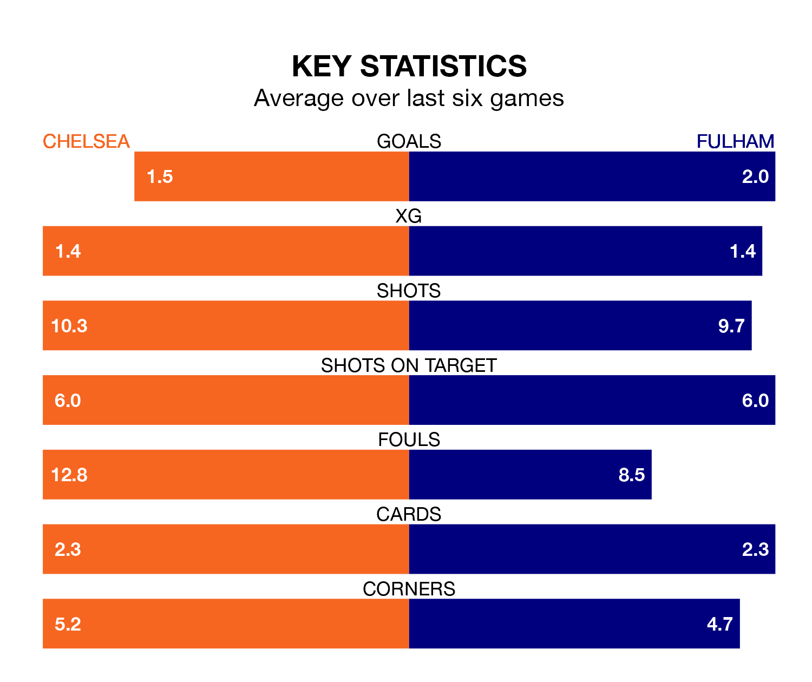

Chelsea are heavy favourites to keep all three points at home in Saturday lunchtime's kick-off against Fulham.
The Blues, who sit 10th in the Premier League with 20 games played, are priced at 1.5 to seal victory at Stamford Bridge.
Sitting four places and four points behind them in the table, Fulham are 5.8 to win with *Betting Company*, while the draw is at 4.2.
In the last 10 years, Chelsea and Fulham have played each other on nine occasions. Chelsea won seven of them, Fulham one, and they drew once.
On average, the Blues scored 1.7 goals and the Cottagers 0.4 in those matches.
Their last meeting was on October 2, when Chelsea won 2-0 away.
With 28 goals in 20 games so far this season, Fulham are scoring at below the league average rate with 1.4 goals per game. And they are conceding more than average, letting in 35 goals at a rate of 1.8 per game.
Chelsea, meanwhile, are above average scorers, with 1.7 goals per game, compared to a league average of 1.6. They have conceded 1.6 goals per game.
With Bernd Leno between the sticks, the Cottagers can rely on one of the league's safest pair of hands. He has kept five clean sheets in his 20 appearances this season in the Premier League.
In the Blues' net, Robert Sánchez has three clean sheets in 16 games.
The home side are in mixed form in the Premier League, with three wins and three losses from their last six games.
And also with three wins and three losses over that period, the visitors' form is identical – they have both taken nine points from 18.
Chelsea's last match was on December 30, a 3-2 win against Luton Town, with Cole Palmer (two) and Noni Madueke getting the goals for the Blues.
Fulham beat Arsenal 2-1 last time out, on December 31, with Bobby Decordova-Reid and Raúl Jiménez on the scoresheet.
Updated: 15:34, 08/01/24